Mejoras
Dedicamos este apartado a tres cuestiones que nos facilitarán el trabajo al crear poses:
- Un puntero para la mirada.
- Una forma para el hueso pivote.
- Ocultar los huesos que no intervienen en la creación de poses.
Un puntero para la mirada
Nuestro personaje Lapintef tiene mirada bifocal y estaría bien que los dos ojos apuntaran siempre al lugar del enfoque.
- Seleccionamos los dos huesos de los ojos en Modo Edición
 y hacemos Esqueleto/Adherencia/Cursor a seleccionado.
y hacemos Esqueleto/Adherencia/Cursor a seleccionado.
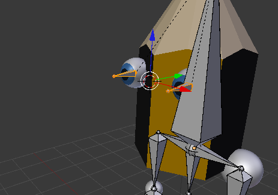
- Añadimos un nuevo hueso con "Shift_A", lo llamamos mirada y lo desplazamos en el eje Y para alejarlo de los ojos.
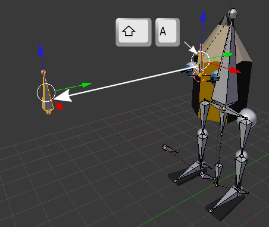
- En Modo Posado
 seleccionamos el hueso ojo.L y le asignamos una Restricción de hueso
seleccionamos el hueso ojo.L y le asignamos una Restricción de hueso  Seguir a con Objetivo: esqueleto y Hueso: mirada. Por la condiciones en las que están colocados los dos huesos no hay que alterar nada más.
Seguir a con Objetivo: esqueleto y Hueso: mirada. Por la condiciones en las que están colocados los dos huesos no hay que alterar nada más.
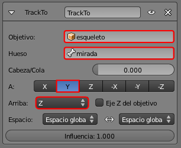
- Repetimos lo mismo con el hueso ojo.R.
Ahora al desplazar el hueso mirada es facilísimo controlar los dos ojos a la vez.
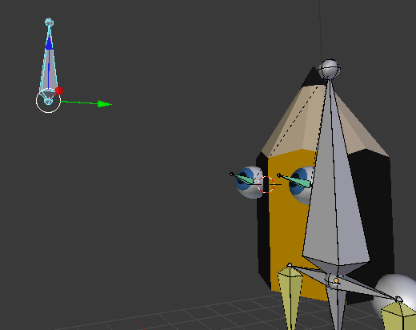Está bien que ese hueso no sea hijo de nadie, así no se ve afectado si desplazamos al personaje entero, que mantendrá la mirada en el mismo enfoque. Pero cuidado no olvidarse de él.
Una forma para el hueso pivote
Existe la posibilidad de sustituir los huesos por formas más apropiadas al elemento que se está moviendo. Solo hay que diseñar la forma y dejarla en una capa que no esté visible.
Por ejemplo para nuestro hueso pivote:
- Sacamos un círculo (Añadir/Malla/Círculo) al que le seleccionamos todos los vértices ("A") en Modo Edición y los extruimos para darle al objeto una sensación de grosor. A ese objeto le ponemos por nombre pivote_forma.
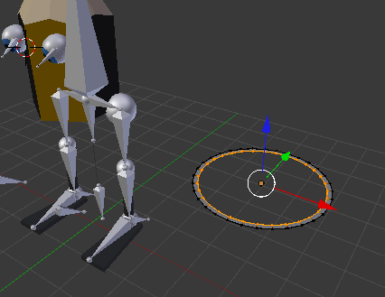
- Seleccionamos en Modo Posado el hueso pivote y en el panel de Hueso
 nos vamos a la botonera Mostrar para seleccionar como Forma personalizada: pivote_forma. Es importante activar la opción Alambre o saldrá en el render.
nos vamos a la botonera Mostrar para seleccionar como Forma personalizada: pivote_forma. Es importante activar la opción Alambre o saldrá en el render.
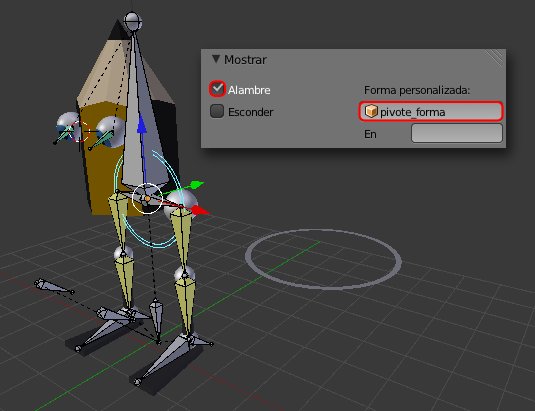
- Antes de enviar el objeto pivote_forma a otra capa hacemos las ediciones de rotación ("R") y escalado ("S") para adaptarlo a nuestros fines. Estas transformaciones hay que hacerlas en Modo Edición .
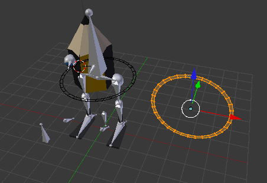
- En Modo Objeto
 enviamos pivote_forma a otra capa (Objeto/Mover a capa) donde permanezca invisible (nosotros lo hemos puesto en la 20)
enviamos pivote_forma a otra capa (Objeto/Mover a capa) donde permanezca invisible (nosotros lo hemos puesto en la 20)
Crear poses ahora es mucho más cómodo.
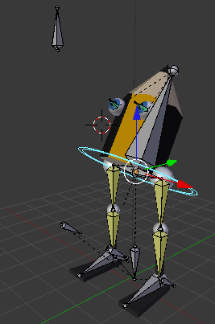Ocultar los huesos que no intervienen en la creación de poses
Por último vamos a ocultar todos los huesos que no intervienen en la creación de poses.
Seleccionamos los huesos en Modo Posado  y usamos el menú Pose/Cambiar capas de huesos y los enviamos a la 2. Estas capas son distintas de las capas donde se guardan las mallas, luces.... para hacerlas visibles/no visibles tenemos que ir al panel Datos de objeto 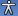 y gestionarlas como las capas normales.
y usamos el menú Pose/Cambiar capas de huesos y los enviamos a la 2. Estas capas son distintas de las capas donde se guardan las mallas, luces.... para hacerlas visibles/no visibles tenemos que ir al panel Datos de objeto 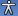 y gestionarlas como las capas normales.
Así luce nuestro personaje con esos huesos ocultos.
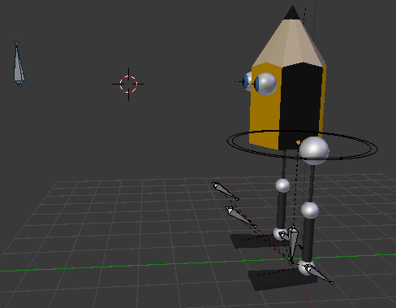También es habitual eliminar al final la visibilidad de las líneas que representan las relaciones y restricciones. La opción está en el cuadro Propiedades ("N").
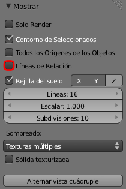